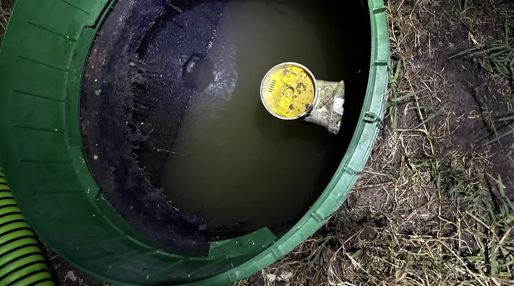

Express Septic Tank Pumping
Septic Tank Pumping in Cape Coral, FL
Quick answer
Express Septic Tank Pumping provides septic tank pumping and septic tank cleaning in Cape Coral, FL, including the North Cape. Cape Coral is in Lee County, across the Caloosahatchee River from Fort Myers. Residential pumping starts at $399.99 (standard 1–3 bed). We are open 24 hours, 7 days a week. For a backup or after-hours emergency, call (239) 451-3261; after-hours pumping is $599.99. For routine pumping, request a time online and we'll contact you to confirm.
- Services: residential and commercial septic pumping, septic repairs, drain field replacement, lift station pumping, septic tank risers, grease trap and interceptor pumping, septic inspections, effluent filter care
- Price: residential pumping starts at $399.99 (standard 1–3 bed); after-hours pumping $599.99; septic inspection with pump-out $549.99; 6-inch risers $299.99 each; buried-lid locating/digging $100, plus $50 for each additional hour
- Hours: open 24 hours, 7 days a week
- Based in: Estero, serving Cape Coral and the rest of Lee County
- Licensing: work performed under FL Certified Plumbing Contractor Raymond F. Dibble, #CFC020332

Do you pump septic tanks in Cape Coral?
Yes. Express pumps septic tanks for homes and businesses in Cape Coral, including the North Cape. Septic tank cleaning in Cape Coral is the same service: we empty the sludge and scum from the tank so it does not overflow into the drain field. Until a street is connected to city sewer, homes there still need regular pumping.
Which parts of Cape Coral still use septic?
Cape Coral began as a low-density community built on septic tanks and shallow wells. Through its Utilities Extension Project (UEP), the City has extended water and sewer to nearly all of Cape Coral south of Pine Island Road and is now working north (City of Cape Coral, Utilities Extension Project). North 1 East construction is expected to finish around the end of 2027, with later North Cape phases still to come (City of Cape Coral, North 1 UEP).
So many North Cape homes still rely on septic tanks. The City notes that failed septic effluent can flow into groundwater and canals (City of Cape Coral, Utilities Extension Project), which matters on canal-front lots. We also serve nearby North Fort Myers, Fort Myers and Pine Island.
Questions about connecting to city utilities or septic tank abandonment go to the City's Customer Billing Services at (239) 242-3853 (City of Cape Coral, North 1 UEP).
Do you offer 24-hour septic pumping in Cape Coral?
Yes. Express is open 24 hours, 7 days a week. For a backup, call (239) 451-3261 day or night and stop running water until we arrive. After-hours pumping is $599.99.
Recent jobs in Cape Coral
- November 14, 2026: Buried lids, inlet and outlet tees, effluent filter. Round concrete tank lids were buried. Dug up the lids, exposed the inlet and outlet tees, and pulled and cleaned the effluent filter. See job
What septic pumping costs in Cape Coral
Pricing
Residential pumping from $399.99
Your final price depends on tank size, tank access, and whether the lid needs locating or digging. Locating and digging up a buried lid is $100, plus $50 for each additional hour. After-hours pumping is $599.99. Call to confirm the price for your tank.
- Buried-lid locating and digging $100, plus $50 for each additional hour
- After-hours pumping $599.99
- Septic inspection with pump-out $549.99
- 6-inch risers $299.99 each
If your lid is buried
Many tanks have lids buried under soil or grass. Locating and digging up a buried lid is $100, plus $50 for each additional hour. If you know where the lid is, mark it or tell us when you call.
To skip digging next time, ask about a 6-inch riser ($299.99 each). It brings the lid up to ground level.
Septic services in Cape Coral
Septic tank pumping and septic tank cleaning in Cape Coral, plus related service pages:
- Septic Tank Pumping
- Residential Septic Tank Pumping
- Commercial Septic Tank Pumping
- Septic Tank Riser Installation
- Septic Repair
- Drain Field Replacement
- Lift Station Pumping
- Grease Trap & Interceptor Pumping
- Septic Inspections
- Septic filter care
- Commercial Grease Trap Service
Signs your tank needs pumping
Slow drains, gurgling pipes, sewage odors outside, or soggy, extra-green grass over the drain field. If it's been 3 to 5 years since your last pump-out, or you don't know, it's time to call.
Book or call
What do you need?
I'm experiencing a backup
Don't book online. Call now and stop running water until we get there. Day or night.
Call now · (239) 451-3261Routine pumping for my home
Send a request on ServiceM8, the booking system we use. We'll contact you to confirm a time; it isn't booked until we confirm. From $399.99.
Book routine service on ServiceM8 (opens in a new tab) ↗Grease trap for a restaurant or kitchen
One-time pump-outs or a recurring schedule. Call to set it up.
Call (239) 451-3261 Grease trap service
Cape Coral septic questions
How much does septic tank pumping cost in Cape Coral?
Residential pumping with Express starts at $399.99 (standard 1–3 bed). Your final price depends on tank size, tank access, and whether the lid needs locating or digging. Locating and digging up a buried lid is $100, plus $50 for each additional hour. After-hours pumping is $599.99. Call (239) 451-3261 to confirm the price for your tank.
My Cape Coral area is in the UEP. Do I still need septic pumping?
Until your home is connected to city sewer, yes. Your septic system keeps handling your wastewater until then. The City's Customer Billing Services, (239) 242-3853, handles connection and septic abandonment questions.
How often should I pump my septic tank?
The U.S. EPA recommends pumping most household tanks every 3 to 5 years. Tank size, household size and water use change that. Pumping before Florida's summer rainy season gives the drain field more room.
How much does it cost to find and dig up a buried lid?
Locating and digging up a buried lid is $100, plus $50 for each additional hour. A riser avoids digging on future visits.
What is a septic tank riser?
A riser is an extension installed on top of the tank's access opening. It brings the lid up to ground level, so future pump-outs don't need digging. Express installs 6-inch risers for $299.99 each. Call (239) 451-3261 to confirm what your tank needs.
Do you do septic repairs?
Yes. We look at the system first, then quote the repair. Call (239) 451-3261. Repair work is performed under Florida Certified Plumbing Contractor Raymond F. Dibble, License #CFC020332.
Do you pump grease traps in Cape Coral?
Yes. We pump grease traps for restaurants and commercial kitchens, one-time or on a recurring schedule. Call (239) 451-3261 to set it up.
Can I book online?
Yes, for routine pumping. Send a request through our ServiceM8 booking page and we'll contact you to confirm a time. It isn't a confirmed appointment until we confirm. For a backup, call (239) 451-3261 day or night.
Do you do septic tank cleaning in Cape Coral?
Yes. Septic tank cleaning and septic tank pumping are the same service: we empty the tank of sludge and scum. Residential pumping starts at $399.99 (standard 1–3 bed). Call (239) 451-3261.
Do you pump septic tanks in North Cape Coral?
Yes. Many North Cape homes still use septic tanks while the City's Utilities Extension Project works north of Pine Island Road. Call (239) 451-3261.
Do you offer 24-hour emergency pumping in Cape Coral?
Yes. Express is open 24 hours, 7 days a week. For a backup, call (239) 451-3261 day or night. After-hours pumping is $599.99.
Do you clean the effluent filter when you pump a Cape Coral tank?
Yes. We clean your filter at no charge on pump-outs and can show you how to keep it clean. See effluent filter care.
Nearby areas we serve
Sources: City of Cape Coral, Utilities Extension Project; City of Cape Coral, North 1 UEP; U.S. EPA, How to care for your septic system.
Reviews
See what customers say on Google
Our reviews are on our Google Business Profile.
Talk to Express about your tank
Call day or night for a backup. For routine pumping, ask about same-day availability.